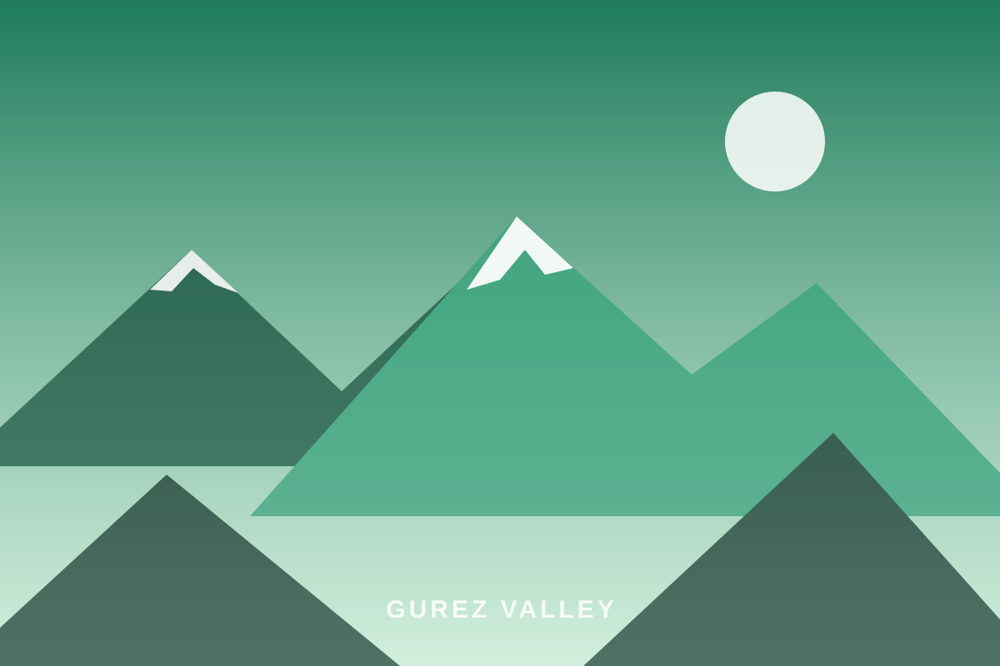
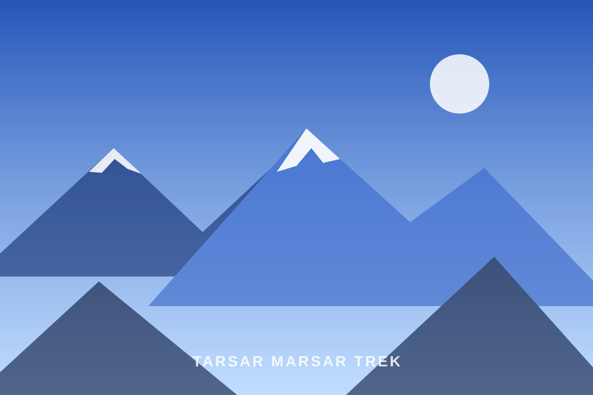
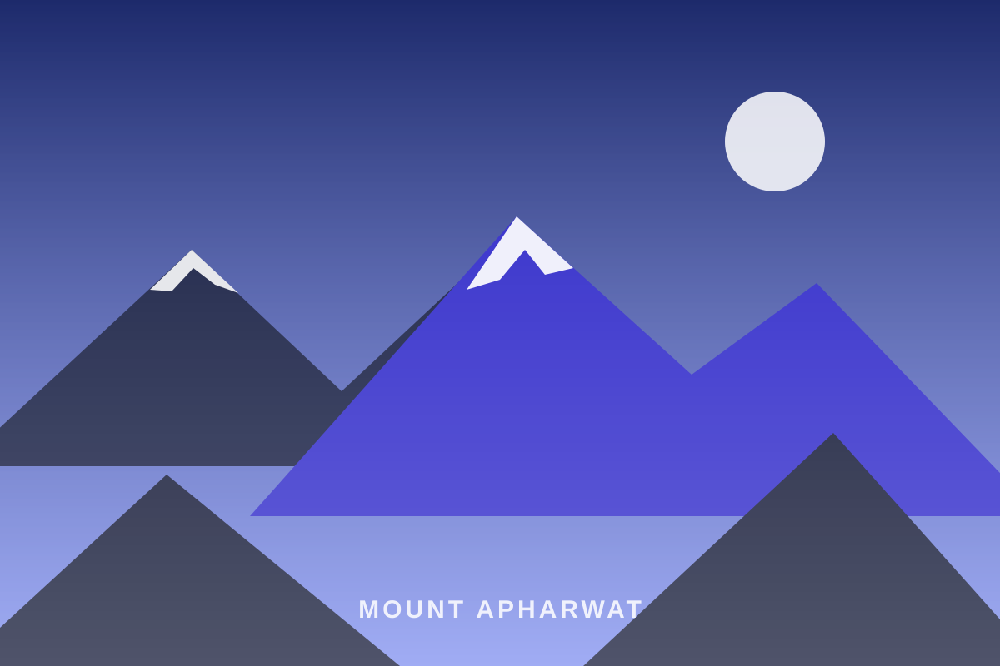
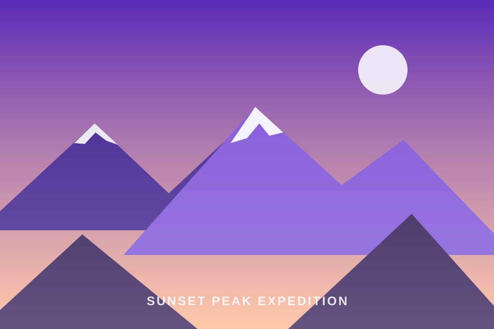

Offbeat Kashmir
Valleys without crowds: Gurez, Bangus, Chatpal, Daksum.
Explore
Four signature routes across the Pir Panjal and Kashmir Himalaya — alpine lakes, wildflower meadows, summit ridgelines and campsites you'll never want to leave.

7 Days · Moderate · 4,200 m
Seven days, seven alpine lakes, and not a single dull kilometre. The Great Lakes trail hops pass after pass between Sonamarg and Naranag, dropping into meadow valleys where turquoise water mirrors 5,000-metre peaks. Widely called the most beautiful trek in India — we'd argue the Himalaya.
₹18,500 / person · Jul–Sep departures
Book This TrekClimb out of the pines into open meadowland, crossing Nichnai Pass (4,100 m) to camp beside Vishansar's glassy blue water.
The trek's high point at 4,200 m, then a descent past Gadsar — the "lake of flowers" — to the seven pocket lakes of Satsar.
Boulder ridges open onto Gangbal and Nundkol beneath Mount Harmukh, before the long pine descent to the ancient temples of Naranag.

6 Days · Moderate · 4,000 m
Two almond-shaped lakes divided by a single ridge — Tarsar bright and welcoming, Marsar moody and often veiled in cloud. Starting from Aru's postcard meadows near Pahalgam, this is the gentler sibling of the Great Lakes: fewer crossings, softer camps, equally staggering beauty.
₹16,900 / person · Jun–Sep departures
Book This TrekRiver-side trails through shepherd villages and pine forest, camping in broad grazing meadows below the ridgelines.
Camp on Tarsar's shore, then cross the 4,000 m pass for the classic top-down view of both lakes at once.
A dawn walk to peer down at secretive Marsar, then an easy descent back through Sundersar's meadows to Aru.

2 Days · Challenging · 4,390 m
The peak that towers over our winter classroom, climbed in a single push from Gulmarg. Ride the Gondola to Phase 2, then earn the final ridgeline on foot — a short, sharp ascent to 4,390 m with the whole Pir Panjal at your feet and, on clear days, Nanga Parbat on the horizon.
Includes a night at an alpine camp, summit certificate, and the best sunrise photograph you will ever take.
₹7,500 / person · Jun–Oct departures
Book This Climb
4 Days · Moderate · 4,120 m
Named for the hour it was made for. This four-day ridge journey from Yusmarg climbs through fir forest and shepherd pastures to a high camp facing due west — where every evening the Pir Panjal ignites in orange and violet. Summit morning delivers a 360° panorama from Kashmir valley to the distant Karakoram.
₹12,800 / person · Jun–Sep departures
Book This ExpeditionOn Every Trek
Good to Know
For Kashmir Great Lakes and Tarsar Marsar, you should comfortably walk 10–12 km with a daypack. If you can jog 5 km in around 35–40 minutes after a few weeks of training, you're ready.
Fresh, hot and plentiful — Kashmiri and North Indian vegetarian meals cooked in camp, with eggs, porridge, soups, evening snacks and unlimited kahwa.
No. Ponies and our support crew carry tents, sleeping bags, mats and kitchen equipment. You carry only a daypack with water, layers and personal items.
Our itineraries build in gradual ascent and acclimatisation. Guides are wilderness first-aid trained, carry oximeters and follow strict monitoring protocols each evening.
July to mid-September for the high routes (Great Lakes, Tarsar Marsar), and June to October for Apharwat and Sunset Peak.
July and August departures fill months ahead — reserve your trek dates today.